Candidate List 20260328 Previous Day Next Day Section 1: New Sources (age<1d) Cosmological Afterglow
Section 2: Old (1-5d) sources observed last night placeholder
Section 2: Older Sources Observed Last Night (12)
0. ZTF26aaodwwg (Afterglow?) [Back to Top] [Share] [Trigger Swift] [Fritz ] [Lasair ]RA, Dec: 226.36107, 5.60206 15h 5m26.66s, 5d36m7.40sGalactic (l, b): 4.97623, 51.54555 ext(g-r) = 0.049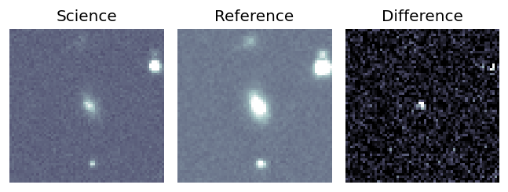
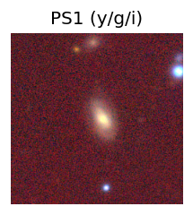
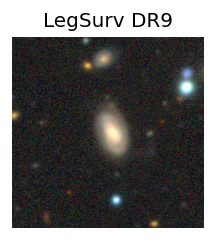
peak abs mag = -18.69 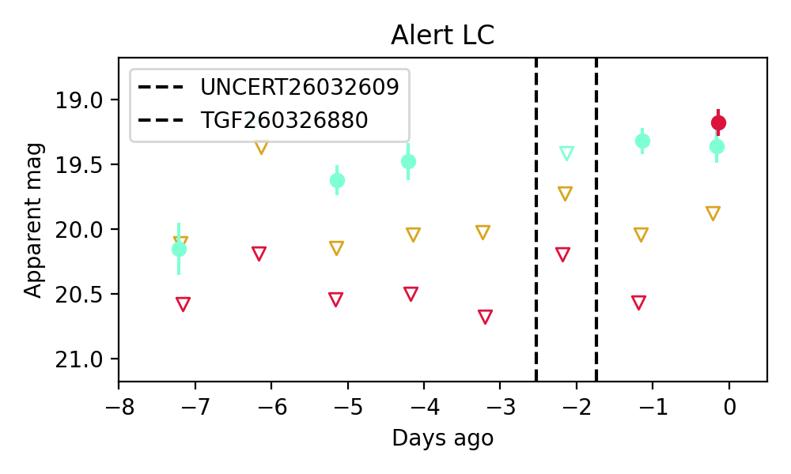
Consistent with synchrotron, g-r>0!
1. ZTF26aaovlst (FBOT?) [Back to Top] [Share] [Trigger Swift] [Fritz ] [Lasair ]RA, Dec: 186.60897, 8.3937 12h26m26.15s, 8d23m37.31sGalactic (l, b): 284.24769, 70.35314 ext(g-r) = 0.023peak abs mag = -23.06 LegacySurvey: 1 sources in 3 arcsec Closest: d = 0.12 arcsec, 167.5 deg (east of north) photoz=0.08 (68% bounds 0.03, 0.19), type=DEV peak abs mag = -18.14 (68% bounds -15.95, -20.28) Consistent with synchrotron, g-r>0!
2. ZTF26aapgqen (Afterglow?FBOT?) [Back to Top] [Share] [Trigger Swift] [Fritz ] [Lasair ]RA, Dec: 198.96231, 19.72382 13h15m50.96s, 19d43m25.74sGalactic (l, b): 341.29321, 80.72043 ext(g-r) = 0.022peak abs mag = -17.64 LegacySurvey: 1 sources in 3 arcsec Closest: d = 1.34 arcsec, 281.5 deg (east of north) photoz=0.34 (68% bounds 0.07, 1.21), type=PSF peak abs mag = -21.89 (68% bounds -18.0, -25.23) Consistent with synchrotron, g-r>0!
3. ZTF26aapgvkd (FBOT?) [Back to Top] [Share] [Trigger Swift] [Fritz ] [Lasair ]RA, Dec: 231.2836, 13.34003 15h25m8.06s, 13d20m24.10sGalactic (l, b): 19.69478, 51.59515 ext(g-r) = 0.051peak abs mag = -24.97 LegacySurvey: 1 sources in 3 arcsec Closest: d = 0.19 arcsec, 50.2 deg (east of north) photoz=0.12 (68% bounds 0.07, 0.39), type=EXP peak abs mag = -21.47 (68% bounds -20.36, -24.34)
4. ZTF26aapjhjc (Afterglow?) [Back to Top] [Share] [Trigger Swift] [Fritz ] [Lasair ]RA, Dec: 253.33481, 10.86484 16h53m20.36s, 10d51m53.43sGalactic (l, b): 29.38802, 31.1093 ext(g-r) = 0.064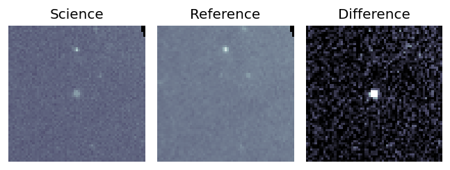
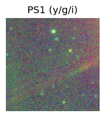
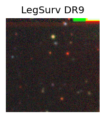
LegacySurvey: 1 sources in 3 arcsec Closest: d = 9.06 arcsec, 11.9 deg (east of north) photoz=0.62 (68% bounds 0.4, 0.79), type=PSF peak abs mag = -23.93 (68% bounds -22.78, -24.57) 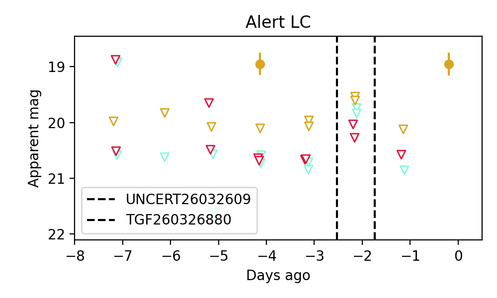
5. ZTF26aapptay (FBOT?) [Back to Top] [Share] [Trigger Swift] [Fritz ] [Lasair ]RA, Dec: 214.35228, 26.91175 14h17m24.55s, 26d54m42.30sGalactic (l, b): 37.21969, 70.8754 ext(g-r) = 0.018peak abs mag = -19.71 LegacySurvey: 1 sources in 3 arcsec Closest: d = 0.38 arcsec, 157.3 deg (east of north) photoz=0.11 (68% bounds 0.09, 0.13), type=SER peak abs mag = -19.02 (68% bounds -18.55, -19.38) Consistent with synchrotron, g-r>0!
6. ZTF26aapyqjm (Afterglow?) [Back to Top] [Share] [Trigger Swift] [Fritz ] [Lasair ]RA, Dec: 193.77883, 5.88999 12h55m6.92s, 5d53m23.95sGalactic (l, b): 305.45512, 68.74372 ext(g-r) = 0.035peak abs mag = -17.81 LegacySurvey: 1 sources in 3 arcsec Closest: d = 1.34 arcsec, 121.7 deg (east of north) photoz=0.06 (68% bounds 0.04, 0.11), type=SER peak abs mag = -17.45 (68% bounds -16.56, -19.09) Consistent with synchrotron, g-r>0!
7. ZTF26aaqnhvs (Afterglow?) [Back to Top] [Share] [Trigger Swift] [Fritz ] [Lasair ]RA, Dec: 226.66224, -19.28227 15h 6m38.94s, -19d-16m-56.18sGalactic (l, b): 341.79989, 33.19433 WARNING: -1.71 deg from ecliptic plane ext(g-r) = 0.094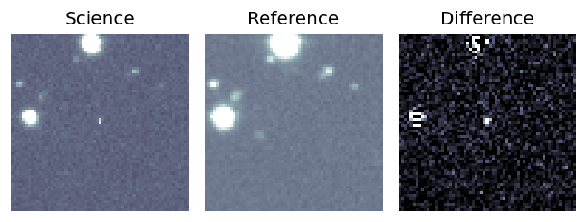
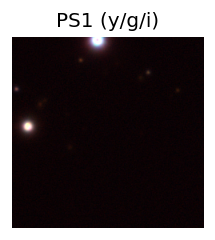
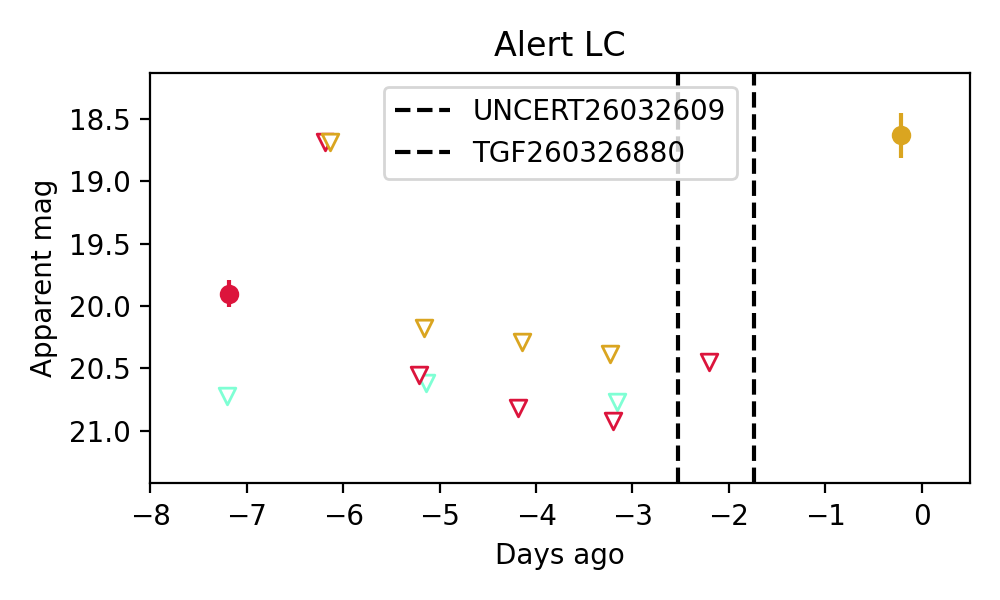
8. ZTF26aaqnnks (Afterglow?) [Back to Top] [Share] [Trigger Swift] [Fritz ] [Lasair ]RA, Dec: 234.31618, -4.73849 15h37m15.88s, -4d-44m-18.56sGalactic (l, b): 0.8191, 38.8335 ext(g-r) = 0.162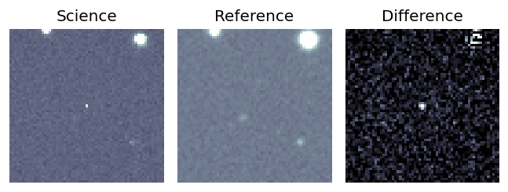
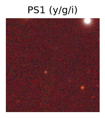
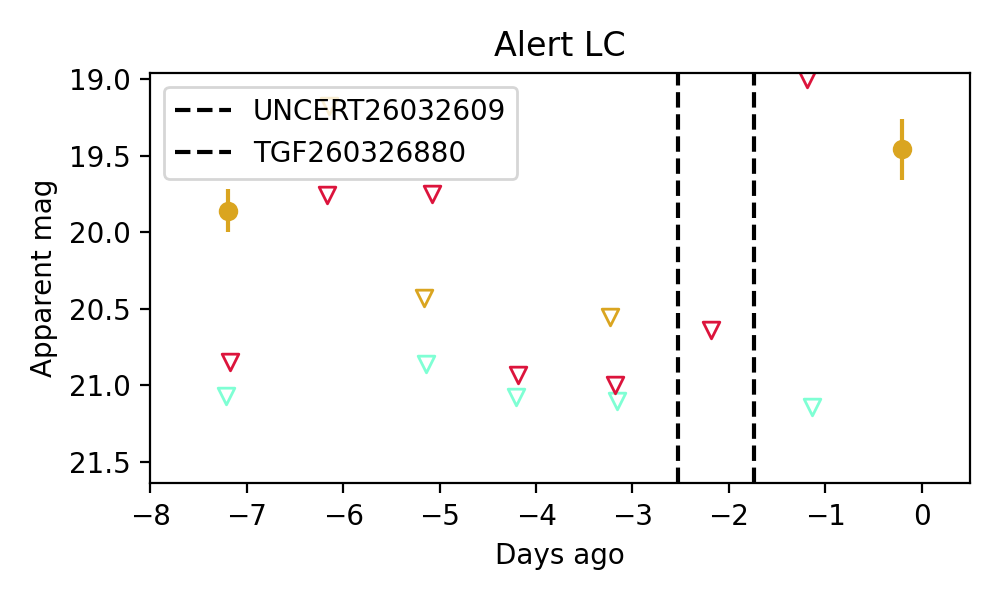
9. ZTF26aaqocaw (FBOT?) [Back to Top] [Share] [Trigger Swift] [Fritz ] [Lasair ]RA, Dec: 212.20367, 20.69438 14h 8m48.88s, 20d41m39.76sGalactic (l, b): 17.08216, 71.20903 ext(g-r) = 0.052peak abs mag = -19.86 LegacySurvey: 1 sources in 3 arcsec Closest: d = 1.02 arcsec, 218.5 deg (east of north) photoz=0.11 (68% bounds 0.08, 0.12), type=SER peak abs mag = -18.82 (68% bounds -18.3, -19.15) Consistent with synchrotron, g-r>0!
10. ZTF26aaqolju (FBOT?) [Back to Top] [Share] [Trigger Swift] [Fritz ] [Lasair ]RA, Dec: 234.74448, 12.70395 15h38m58.68s, 12d42m14.21sGalactic (l, b): 21.18415, 48.3002 ext(g-r) = 0.05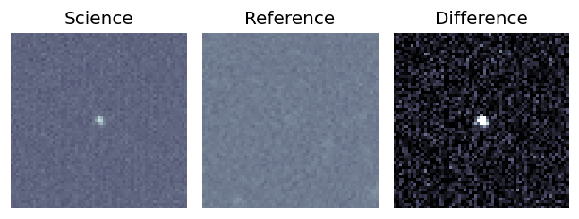
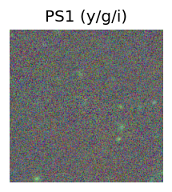
LegacySurvey: 1 sources in 3 arcsec Closest: d = 1.30 arcsec, 47.8 deg (east of north) photoz=0.48 (68% bounds 0.4, 0.56), type=EXP peak abs mag = -23.38 (68% bounds -22.92, -23.77) 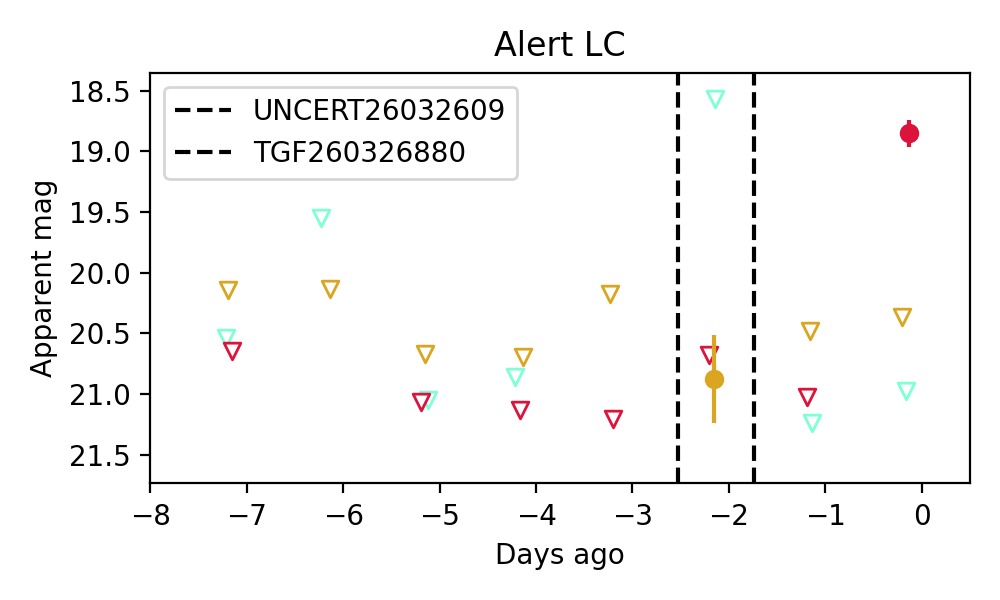
11. ZTF26aaqolpm (Afterglow?) [Back to Top] [Share] [Trigger Swift] [Fritz ] [Lasair ]RA, Dec: 233.91047, 12.43797 15h35m38.51s, 12d26m16.70sGalactic (l, b): 20.26735, 48.90504 ext(g-r) = 0.042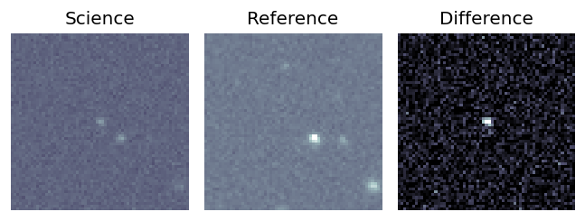
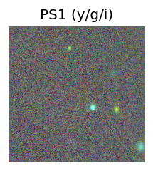
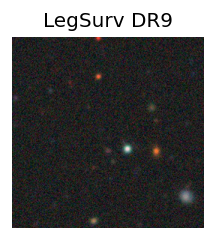
LegacySurvey: 1 sources in 3 arcsec Closest: d = 6.78 arcsec, 180.4 deg (east of north) photoz=0.9 (68% bounds 0.8, 1.03), type=REX peak abs mag = -24.15 (68% bounds -23.84, -24.52) 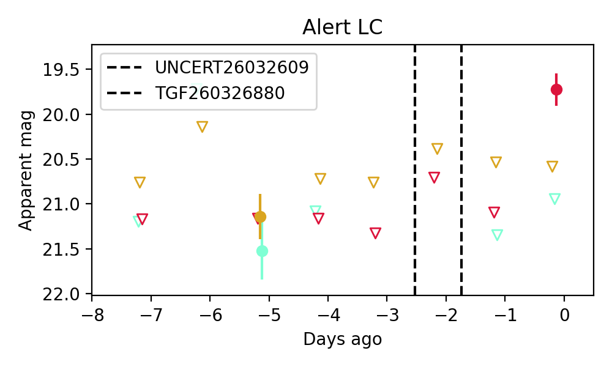
Consistent with synchrotron, g-r>0!